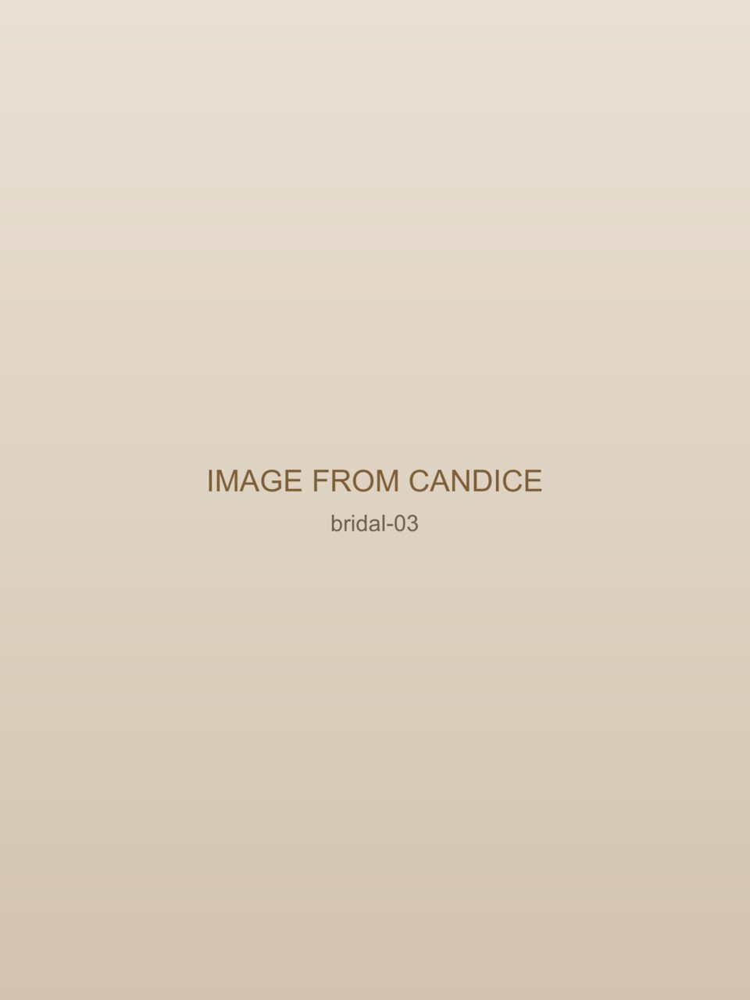
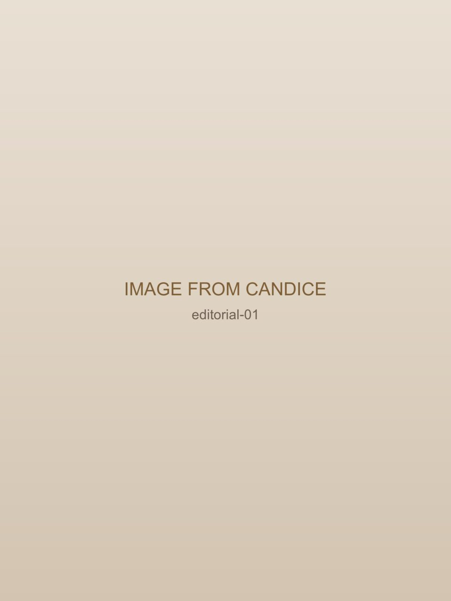
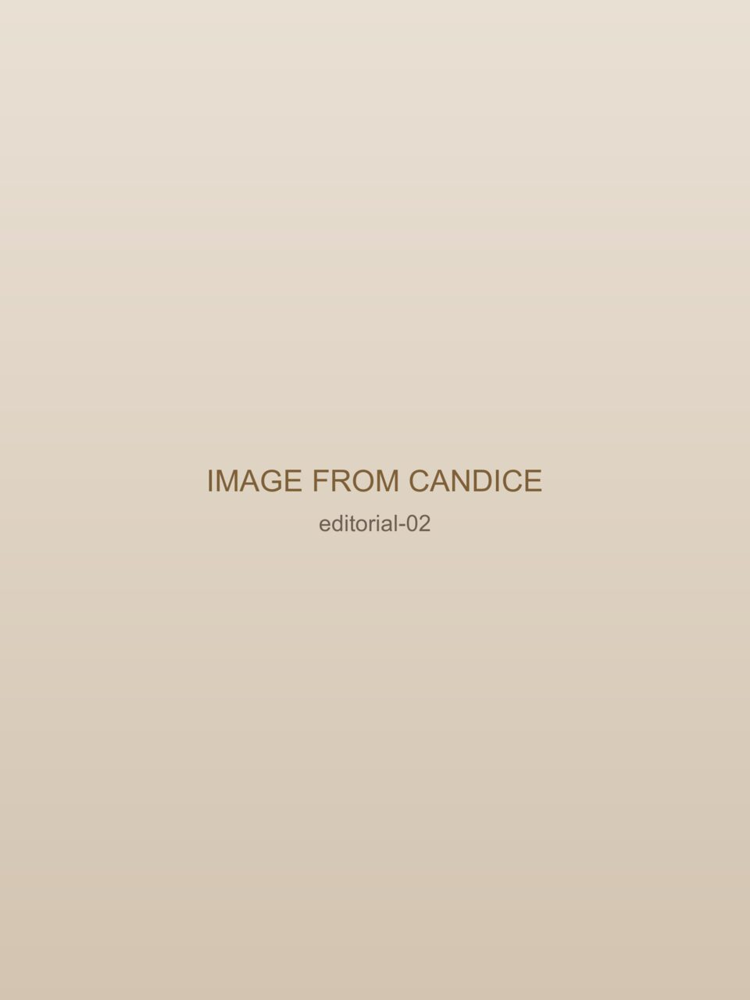

Candice Kuit
Hair & Makeup Artist · Cape Town
Soft glam bridal and editorial makeup. Skin first, and still you.
Your wedding day isn’t about becoming someone else.
Enhance, don’t maskLuminous skin, then delicate definition.
Candice works skin-first. The skin is prepared until it glows, then definition goes only where it is needed: a little at the eyes, the brows, the lips. You still recognise yourself in the mirror, and in the photographs years from now.
She is especially strong with mature skin, works across every skin tone, and builds each look to photograph well and to last from the first portrait to the last dance.




What’s included
- Bridal makeup
- Bridal hair Confirm she offers hair
- Trial session Confirm
- Bridal party hair and makeup Confirm
- Travel area Confirm travel area
On set for campaigns, fashion and beauty.
The same skin-first discipline, adjusted for camera, lighting and a production schedule. Commercial bookings go through One League Creative Management.
Only images Candice confirms she may use
Adidas · Timberland · Unilever · Glamour · Essie · Orlebar Brown · Superbalist · Ace & Tate


![Campaign hair and makeup by Candice Kuit [CONFIRM: describe image]](images/editorial-03-960.jpg)
Brands, productions and press.
Confirm full list with Candice
- Selected clients
- AdidasTimberlandSuperbalistUnileverKFCAce & TateGlamourCape Union MartEssieOrlebar BrownRussell & BromleyBrutal FruitHunza G
- Productions
- Egg FilmsCape Town ProductionsMoonlightingHacienda ProductionsFlamingo FilmsBaker & CoMR Films
- Film
- Diana (2013)Makeup assistant, Africa unit
- Featured in
- SA Weddings“Top 8 Makeup Artists in Cape Town” · “Top Bridal Makeup Artists in the Western Cape”

Candice Kuit
Candice Kuit is a hair and makeup artist based in Cape Town. Through The Makeup Company she works with brides, with a skin-first approach to soft glam: luminous skin, delicate definition, and makeup that enhances rather than masks. She is known for her work with mature skin, and her bridal clients have included the wives of presidential candidates.
Alongside bridal, she works across editorial, television and film for brands including Adidas, Timberland, Unilever and Glamour, with production companies such as Egg Films and Moonlighting. She is represented for commercial work by One League Creative Management, and launched a makeup trade show Name / year.
She has worked with brides since 2008 Since 2008 or 20+ years, with more than 10,000 hours in the chair.
Tell her the date and the venue.
Brides
Message Candice directly on WhatsApp. The message opens ready to send: just add your date and venue.
WhatsApp Candice- WhatsApp +27 79 444 4257 OK to publish?
- Email Email address
Commercial
Represented by One League Creative Management, Cape Town.
One League profile- Email info@oneleague.co.za
- Phone +27 21 462 7607
- Web oneleague.co.za
Hair and makeup work and site text on this page are the work of Candice Kuit. Site text © 2026 Candice Kuit.
Photographs are © the photographers credited against each image and appear here with permission. This page grants no rights in them. Licensing enquiries for an image go to the photographer credited on it.
No licence is granted for the reproduction of this material, or for its use in the training, fine-tuning or evaluation of machine learning models or generative artificial intelligence systems. Data mining rights are expressly reserved, for Candice Kuit and for the photographers credited. Search indexing and citation are permitted, as set out in robots.txt.